Казалось бы, кто как не редактор должен на «отлично» работать с текстом в Figma. Но на практике именно тут чаще всего косячат: текст вылезает за карточку, межстрочный интервал «дефолтный и страшный», шрифт не тот, что в макете дизайнера. Сегодня разбираем текст в Фигме от и до.
План урока
- Зачем UX-редактору лезть в типографику руками
- Текстовый инструмент и базовые настройки
- Auto width / Auto height / Fixed size
- Параметры шрифта: кегль, интерлиньяж, трекинг, вес
- Выравнивание и абзацные отступы
- Подключение своих и Google-шрифтов
- Несколько видов текста в одном блоке
- Типичные ошибки редактора в тексте
- Итог + домашнее задание
1. Зачем UX-редактору лезть в типографику руками
Дизайнер отвечает за то, как выглядит система в целом, а вы — за то, что происходит с конкретным текстом внутри нее: помещается ли заголовок в две строки, не разъезжается ли кнопка от длинного текста, не «слипается» ли текст с иконкой. Без базовых навыков работы с текстом в Figma вы не сможете это проверить сами и будете каждый раз дёргать дизайнера.1
2. Текстовый инструмент и базовые настройки
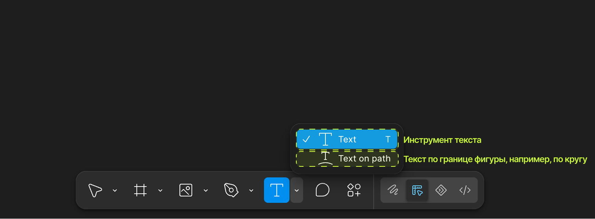
Текстовый инструмент — клавиша T. Клик — создаёт текстовый блок с автошириной, зажатый клик и протяжка — создаёт блок фиксированной ширины, в котором текст сам переносится по словам.
После создания текста справа, на панели Design, открывается блок Text со всеми параметрами: шрифт, начертание, размер, интерлиньяж, трекинг, выравнивание, цвет:
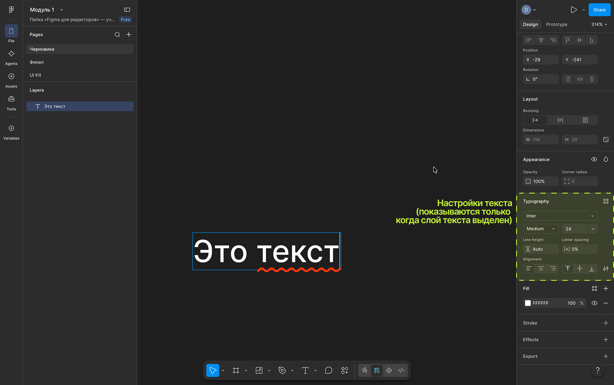
3. Auto width / Auto height / Fixed size
Это тот самый параметр, который чаще всего ломает вёрстку у новичков. Когда набираем текст у нас доступны три режима отображения текста, как текст будет вести себя (иконки над блоком Text или в шапке панели):
- Auto width — блок текста растягивается по ширине текста, перенос строк не работает — весь текст в одну строку;
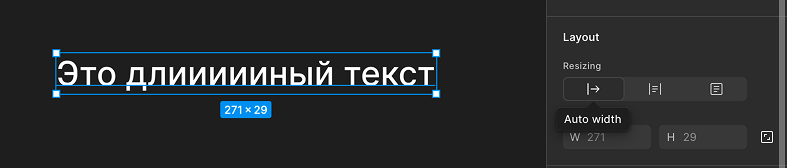
- Auto height — ширина фиксирована, но высота блока подстраивается под количество строк — самый частый режим для кнопок и карточек;
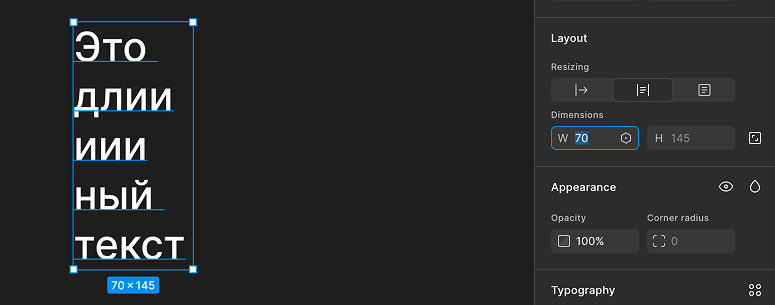
- Fixed size — и ширина, и высота заданы вручную, текст может обрезаться или вылезать за границы, если не помещается.
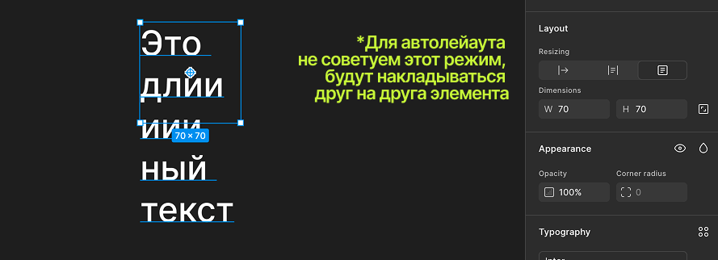
Практическое правило: заголовки и кнопки — чаще Auto width или Auto height, длинные абзацы в карточках — Auto height с фиксированной шириной.
4. Параметры шрифта: кегль, интерлиньяж, трекинг, вес
- Кегль (Size) — размер текста в пикселях.
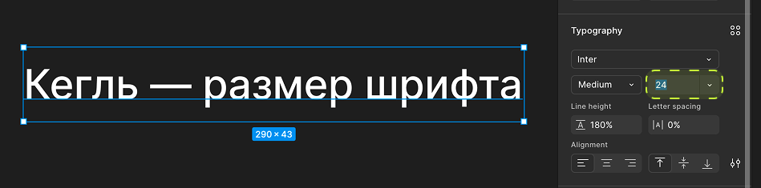
- Интерлиньяж (Line height) — расстояние между строками. По умолчанию Auto (обычно ~120% от кегля), но в готовых дизайн-системах почти всегда задают руками — например, 150% для основного текста и 120% для заголовков.
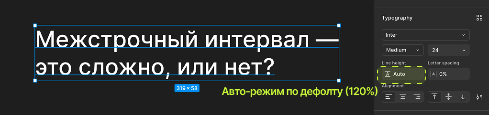
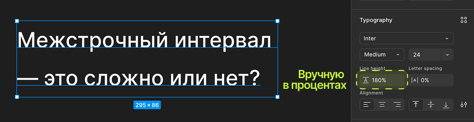
Будьте внимательны, когда указываете Line height в процентах, если не поставить знак «%», то фигма посчитает это за количество пикселей между строками и произойдет такая дичь:
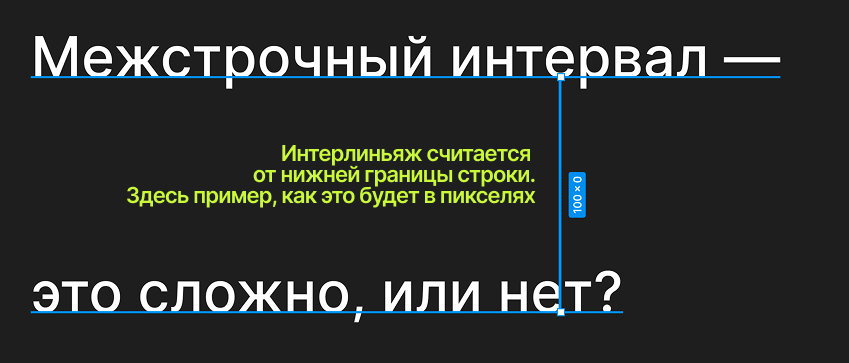
- Трекинг (Letter spacing) — расстояние между буквами. Мелкий текст и капс (ВСЕ ЗАГЛАВНЫЕ) часто требуют небольшого положительного трекинга для читаемости.
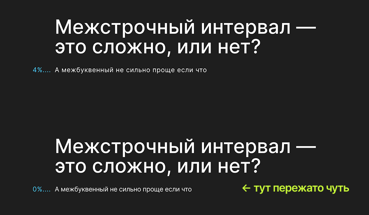
- Вес (Weight) — начертание: Regular, Medium, Semibold, Bold и так далее, зависит от того, сколько начертаний у подключённого шрифта.
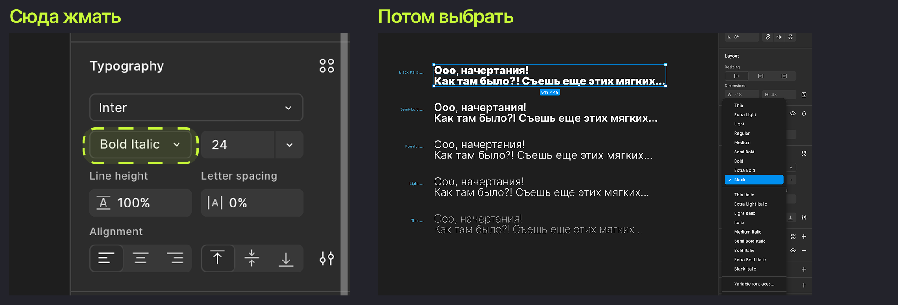
А еще можно выбирать кастомное начертание и вес, но не советуем, ибо дробные и произвольные числа дизайнеры и разработчики не любят, лучше использовать те, которые приняты у вас на проекте, чтобы не прибавлять работы по перепроверке дизайнеру:
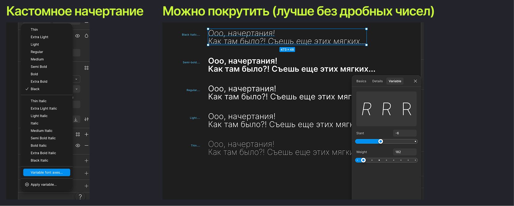
Если в макете «текст выглядит иначе, чем у дизайнера», в 9 случаях из 10 дело в этих четырёх параметрах — сверяйте их в первую очередь.
5. Выравнивание и абзацные отступы
Горизонтальное выравнивание (лево/центр/право/по ширине):
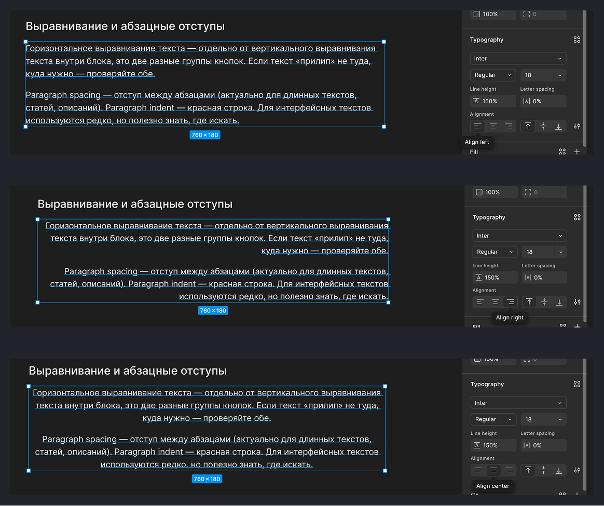
и вертикальное(верх/центр/низ) — оно будет работать если текстовый блок больше, чем сам текст внутри блока:
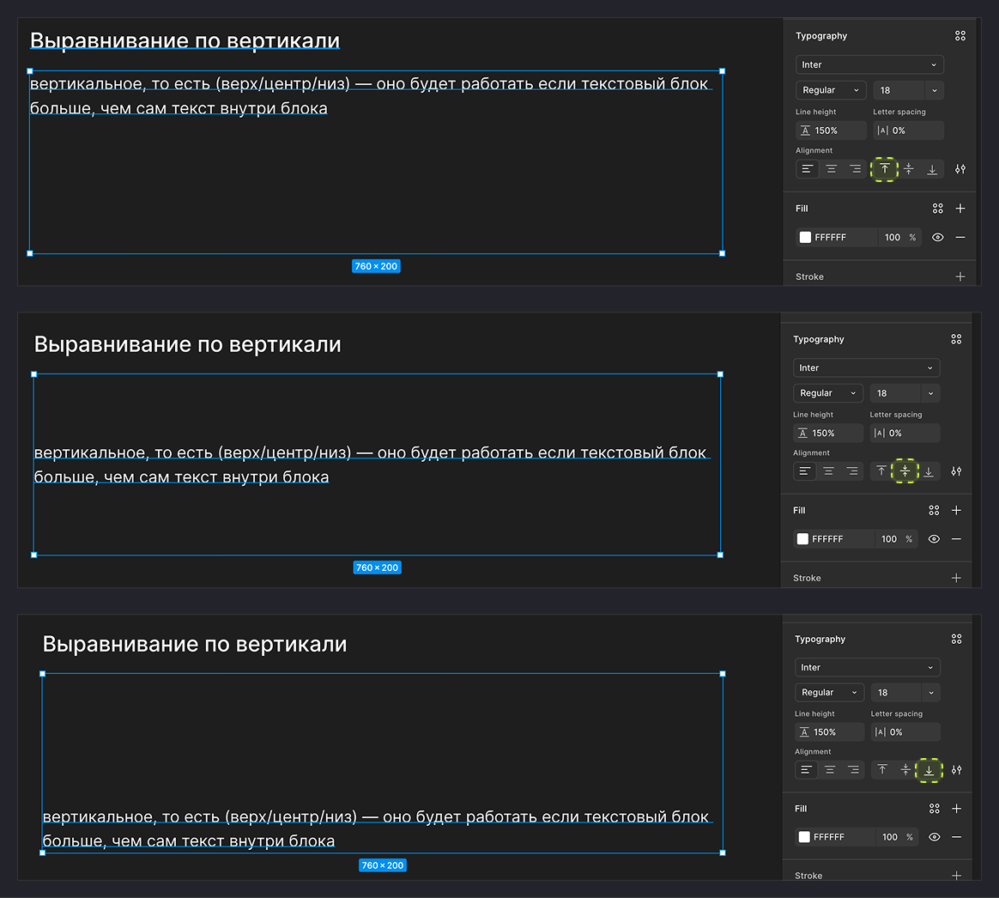
Горизонтальное выравнивание текста — отдельно от вертикального выравнивания текста внутри блока, это две разные группы кнопок. Если текст «прилип» не туда, куда нужно — проверяйте обе.
Paragraph spacing — отступ между абзацами (актуально для длинных текстов, статей, описаний):
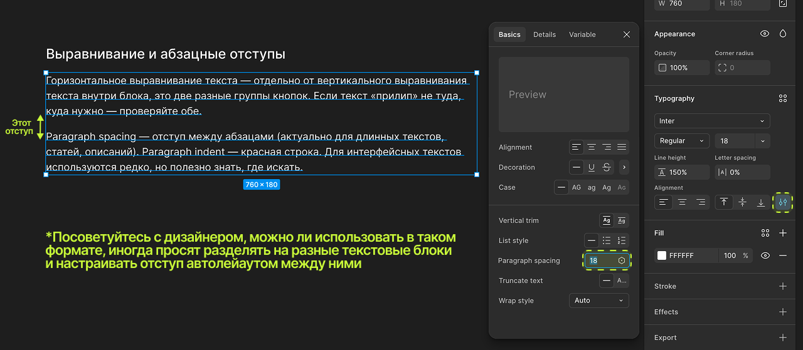
Paragraph indent — красная строка. Для интерфейсных текстов используются редко, но полезно знать, где искать:
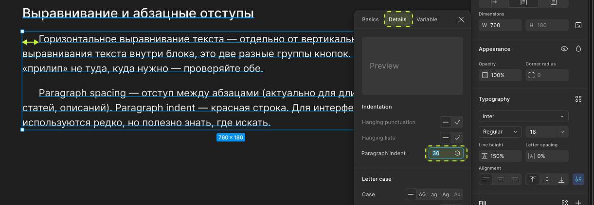
6. Подключение своих и Google-шрифтов
Тут можно переключить шрифт и выбрать из доступных: установленных на устройство, гугл-шрифтов,
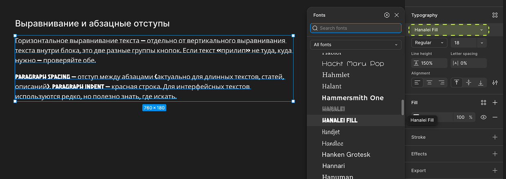
Фигма по умолчанию даёт доступ к большой библиотеке Google-шрифтов — просто начните печатать название в поле Font. Если нужен кастомный/платный шрифт (например, фирменный шрифт компании), есть два пути:
- Figma Fonts / плагин для локальных шрифтов — шрифт должен быть установлен на вашем компьютере, тогда десктоп-приложение подхватит его само.
- Через установку шрифтов на ваш компьютер и подобные сервисы синхронизации шрифтов с системой. Тут лучше гуглить как это сделать на вашей версии операционной системы.
Важный момент: свои шрифты можно использовать, только в десктопной версии Фигмы, то есть не через браузер, а через приложение:
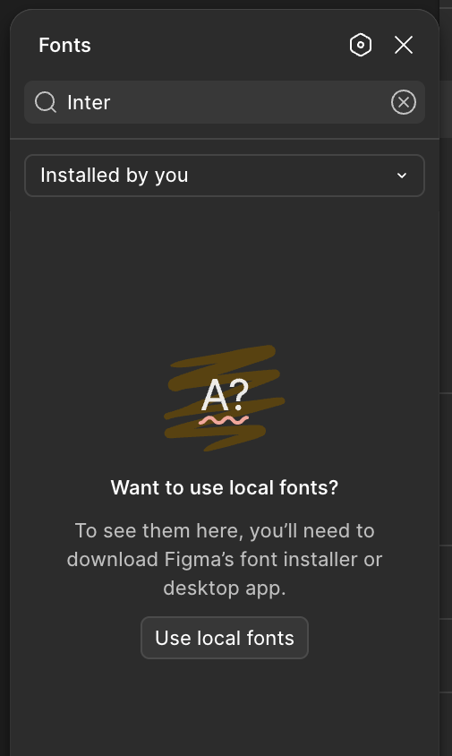
Если надо заменить везде шрифт, то есть удобный плагин для автоматической замены одного шрифта, на другой:
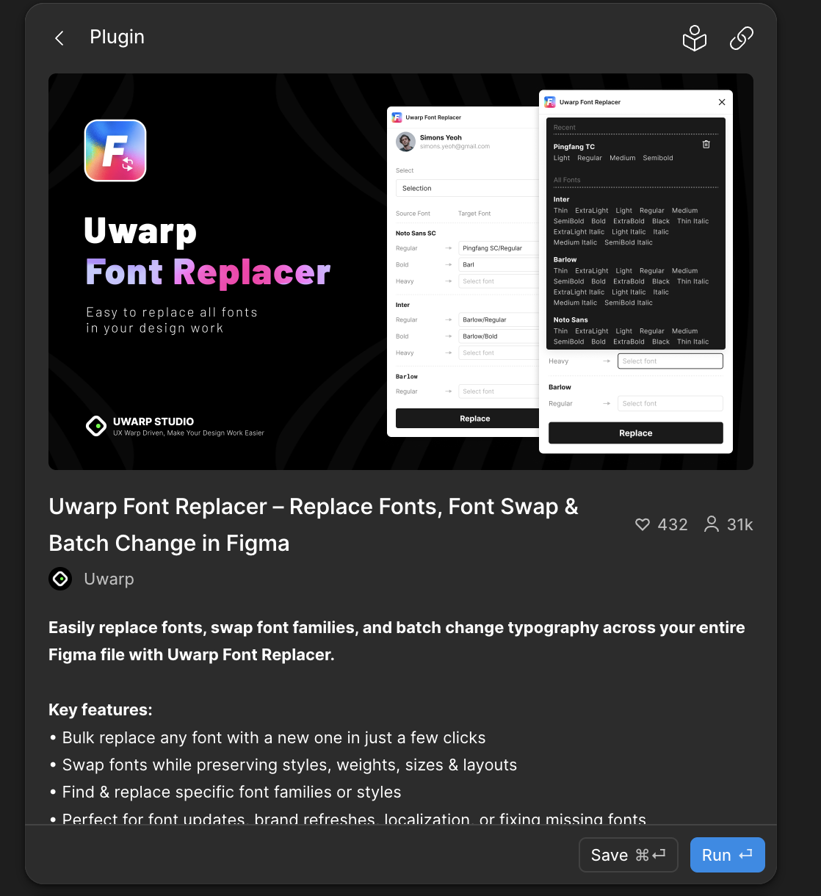
Если у коллег шрифт не отображается — почти всегда значит, что шрифт не установлен локально на их компьютере, это не баг Figma.
📎 Источник: Figma Help — Fonts
7. Несколько видов текста в одном блоке
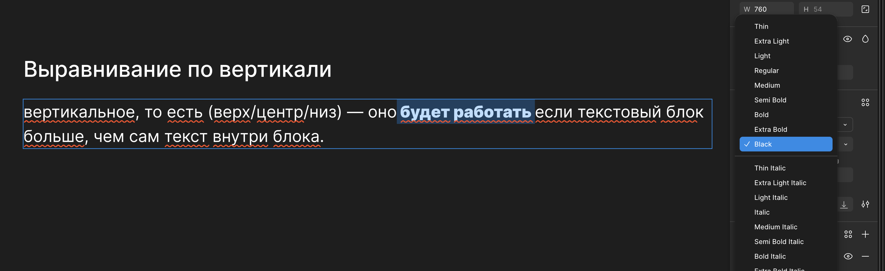
Внутри одного текстового блока можно выделить часть текста (двойной клик — слово, тройной — строка, или протяжка мышью) и задать ей другой вес, цвет или размер — например, сделать одно слово жирным. Это удобно для акцентов, но не злоупотребляйте: если в тексте много смешанных стилей, разумнее разбить его на отдельные текстовые слои.
А еще дизайнеры и не дай бог фронтендеры придут в бешенство, если такой текст случайно уйдет в разработку, если у вас вся типографика из дизайн-системы. Так что используйте такой метод только для черновиков, и/или подсвечивайте дизайнеру, где в макетах меняли текст вручную :)
8. Типичные ошибки редактора в тексте
- Оставлять Line height на Auto, когда в дизайн-системе задано конкретное значение.
Пример: может влиять на доступное количество текста в элементе, куда вы пишете текст. - Печатать текст с двойными пробелами и лишними пробелами по краям — это ломает автолейаут.
Пример: если текстовое поле будут машстабировать, например, в адаптации под разные устройства, то в тексте будут видны дыры. - Не проверять поведение текста на реальных длинных данных (имя пользователя, длинное название товара) — макет с текстом-заглушкой «Текст» ничего не говорит о реальных кейсах.
- Копировать текст из Word/Google Docs с сохранением исходного форматирования — используйте Cmd/Ctrl+Shift+V (вставить без форматирования).
Итог урока
Сегодня разобрали текстовый инструмент, режимы роста блока, параметры шрифта и типичные ошибки. В следующем уроке — цвет: как его настраивать и не плодить хаос из сотни оттенков.
Домашнее задание:
- Создать три текстовых блока в разных режимах: Auto width, Auto height, Fixed size — с одинаковым длинным текстом, сравнить поведение.
- Подключить любой Google-шрифт и применить его к заголовку и основному тексту с разным весом.
- Написать реальный длинный вариант текста (например, длинное имя) в карточку и проверить, не ломается ли вёрстка.